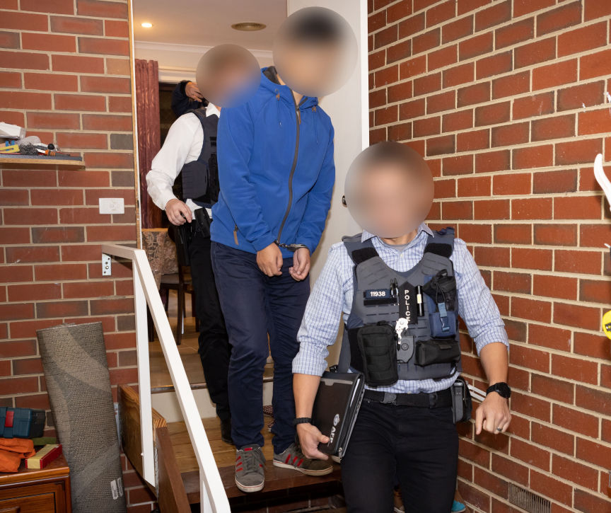
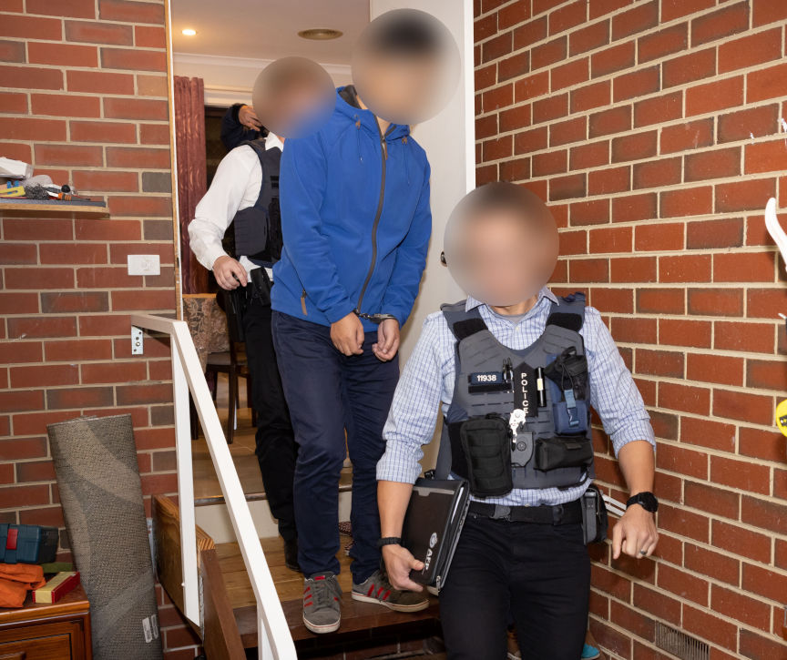

Australian Genesis Market User Avoids Prison
An Australian man was sentenced to 150 hours of community work for purchasing stolen credentials on Genesis market.

The 32-year-old man from Melbourne was sentenced in the Melbourne Magistrates Court after pleading guilty to one count of possessing data with the intent to commit a computer offense on January 16, 2024.
The 32-year-old was one of the 10 suspects arrested by Australian authorities as part of an international operation that took down Genesis Market. Investigations into the suspects were launched in 2020 after investigators from the AFP received information regarding suspected users of the market from the FBI.
Police executed a search warrant at the 32-year-old's home on April 5, 2023, a day after international law enforcement agencies seized and took down Genesis Market's 11 clearnet domains.
The search resulted in the seizure of a laptop and mobile phone. A forensic review of the devices revealed he had purchased several 'bots' from Genesis Market. The bots contained approximately 650 stolen login credentials.
The Melbourne Magistrates Court sentenced the 32-year-old to a 12-month Community corrections order, with 150 hours of community work.
In December 2023, a 25-year-old Brisbane man was also sentenced for buying stolen credentials on Genesis Market. He had purchased 1000 bots from the market.
He pleaded guilty to four counts of unauthorized access to restricted data and two counts of possessing data with the intent to commit a computer offense.
The Brisbane District Court sentenced him to two years and six months. He was released on a $2000 recognizance order on the condition he was of good behavior for five years and subject to two years’ probation.

The 32-year-old's arrest
The 32-year-old man from Melbourne was sentenced in the Melbourne Magistrates Court after pleading guilty to one count of possessing data with the intent to commit a computer offense on January 16, 2024.
The 32-year-old was one of the 10 suspects arrested by Australian authorities as part of an international operation that took down Genesis Market. Investigations into the suspects were launched in 2020 after investigators from the AFP received information regarding suspected users of the market from the FBI.
Police executed a search warrant at the 32-year-old's home on April 5, 2023, a day after international law enforcement agencies seized and took down Genesis Market's 11 clearnet domains.
The search resulted in the seizure of a laptop and mobile phone. A forensic review of the devices revealed he had purchased several 'bots' from Genesis Market. The bots contained approximately 650 stolen login credentials.
The Melbourne Magistrates Court sentenced the 32-year-old to a 12-month Community corrections order, with 150 hours of community work.
In December 2023, a 25-year-old Brisbane man was also sentenced for buying stolen credentials on Genesis Market. He had purchased 1000 bots from the market.
He pleaded guilty to four counts of unauthorized access to restricted data and two counts of possessing data with the intent to commit a computer offense.
The Brisbane District Court sentenced him to two years and six months. He was released on a $2000 recognizance order on the condition he was of good behavior for five years and subject to two years’ probation.